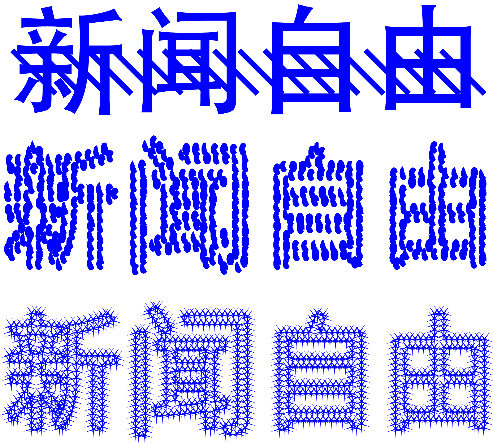
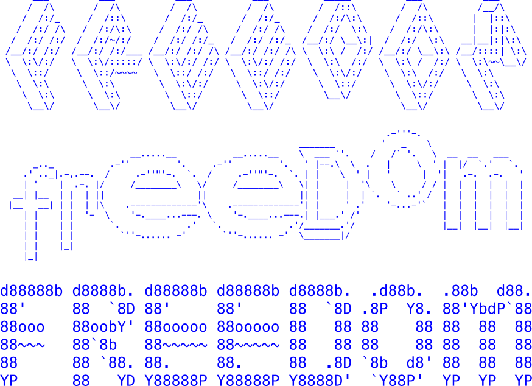
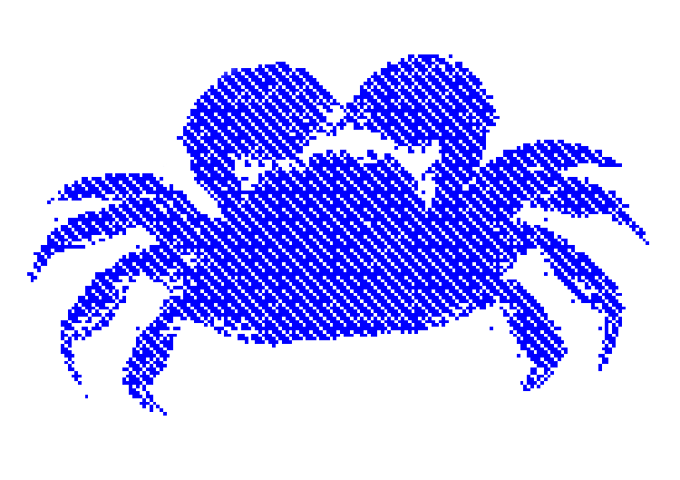

Disclaimer
The Following are tools to avoid surviellance, but to be clear these are only one persons expiriments. So I encourage you to expiriment and find what works for you, and of course using these processes in combination can only help obfuscate the content better!
General Rules
1. Raster is best
2. Do not have unobscured typography type can be (any combination):
a. stretched
b. skewed
c. scanned
d. covered with other shapes
e. made of many points rather than lines
3. Use CVdazzle for pictures of faces (can be added after picture s taken).
4. For human monitors use .gifs or video where the content doesn’t appear for a while.
Examples:
For this example use a different texture of brush to draw over the typography in the same color as the type.
This is a simple program to resample typographic vectors and place vector shapes along the lines, this is good for scaleable type and confuses programs by making them read individual vector shapes rather than the pattern.
—>Here is the program and the file to execute the action.<—
{kind=link}
This is a simple distortion to the type which can be achieved through scanning or photoshop emulating captchas. There are also generators that exist online
This idea is that if you send a .gif with the first 3/4 of the frames empty a human monitor will have less of a chance to catch the content.
There is as well word art that makes words out of other words ex:

These were generated with this website

100 words found more in censored messages than normal messages (this is only an example of server side censorship not in-client censorship). Rated from most censored to least.
- 亡党 Death of the party
- 薄熙来 Bo Xilai
- 胡耀邦 Hu Yaobang
- 胡锦涛 Hu Jintao
- 新闻自由 Freedom of the press
- 强拆 Demolitions
- 维稳 Maintenance of stability
- 令计划 Ling Jihua
- 周永康 Zhou Yongkang
- 徐才厚 Xu Caihou
- 和谐社会 Harmonious society
- 抓捕 Arrest
- 政法委 Politics and Law Committee
- 亡国 Subjugation
- 贪腐 corrupted
- 军委 Military commission
- 宪政 Constitutionalism
- 统战 United Front
- 专政 Dictatorship
- 情妇 Mistress
- 纪委 Discipline
- 政治局 Politburo
- 邓小平 Deng Xiaoping
- 民主自由 Democracy and freedom
- 高官 Officials
- 言论自由 Freedom of speech
- 公款 Public fund
- 首长 Leading cadre
- 市委书记 Party Secretary
- 两会 National People’s Congress and CPPCC
- 五四 Fifty-four
- 上访 Petition
- 人大常委 NPC Standing Committee
- 贪官 Corrupt
- 维权 Rights
- 共产党 Communist party
- 党政 Party
- 黑社会 Criminal underworld
- 下台 Step down
- 城管 Chased
- 副主席 Vice-chairman
- 国耻 National humiliation
- 镇压 Repression
- 中共 Chinese Communist Party
- 腐败 Corruption
- 习近平 Xi Jinping
- 贪污 corrupt
- 近平 Nearly flat
- 共产 Communist
- 常委 Standing committee member
- 屏蔽 Shield
- 公开信 Open Letter
- 书记 Secretary
- 宪法 Constitution
- 派出所 Local police station
- 社会主义 Socialism
- 强奸 Rape
- 雷锋 Lei Feng
- 十八大 18th National Congress
- 周恩来 Zhou Enlai
- 马克思主义 Marxism
- 法制 Legal system
- 食品安全 Food Safety
- 拆迁 Demolition
- 意 Public opinion
- 总书记 General Secretary
- 打倒 Attack
- 非法 Illegal
- 封锁 Blockade
- 立案 Register
- 天安门 Tiananmen Square
- 抗日 Japanese
- 官员 Officer
- 嫖 Prostitute
- 宣传部 Publicity Department
- 公安 Public security
- 民生 People’s livelihood
- 法治 Rule of Law
- 老百姓 Ordinary people
- 毛泽东 Mao Zedong
- 当局 Authorities
- 逮捕 Arrest
- 共产主义 Communism
- 李克强 Li Keqiang
- 中华人民共和国 People’s Republic of China
- 中共中央 CPC
- 平反 Redress
- 言论 Remarks
- 人权 Human rights
- 市长 Mayor
- 妓女 Prostitute
- 毛主席 Chairman Mao
- 政权 Regime
- 绑架 Kidnap
- 丑闻 Scandal
- 流氓 Rogue
- 奸 Traitor
- 政协 CPPCC
- 资本主义 Capitalism
- 右派 The Right
More monitored words
How censorship in WeChat works
Keyword censorship can be implemented in two ways: on the client-side (i.e., on the
application itself) or on the server side (i.e., on a remote server). In a client-side implementation,
all of the rules to perform censorship are inside of the application running on your device. Often the
application has a built-in list of keywords that it uses to perform checks to determine if any of these
keywords are present in your chat messages before your messages are sent. If your message contains a keyword
from the list then the message is not sent. In a server-side implementation the rules to perform censorship
are on a remote server. When a message is sent, it passes through the server that checks if banned keywords
are present and, if detected, blocks the message.
Keyword filtering on WeChat is only enabled for users with accounts registered to mainland China phone numbers, and persists even if these users later link the account to an International number.
Keyword censorship is no longer transparent. In the past, users received notification when their message was blocked; now censorship of chat messages happens without any user notice.
More keywords are blocked on group chat, where messages can reach a larger audience, than one-to-one chat.
Keyword censorship is dynamic. Some keywords that triggered censorship in our original tests were later found to be permissible in later tests. Some newfound censored keywords appear to have been added in response to current news events.
WeChat’s internal browser blocks China-based accounts from accessing a range of websites including gambling, Falun Gong, and media that report critically on China. Websites that are blocked for China accounts were fully accessible for International accounts, but there is intermittent blocking of gambling and pornography websites on International accounts.
References:
Anti-Facial Recognition Makeup/Hair
Anti-Facial Recognition Makeup/Hair
Anti-Facial Recognition Prosthetic
Anti-Facial Bot text
WeChat Study
Information on power structures in Surveillance
To contribute to this list send me an email